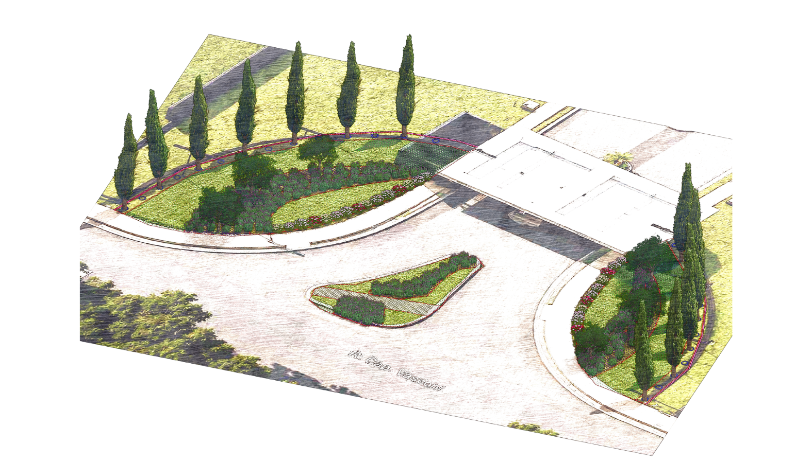
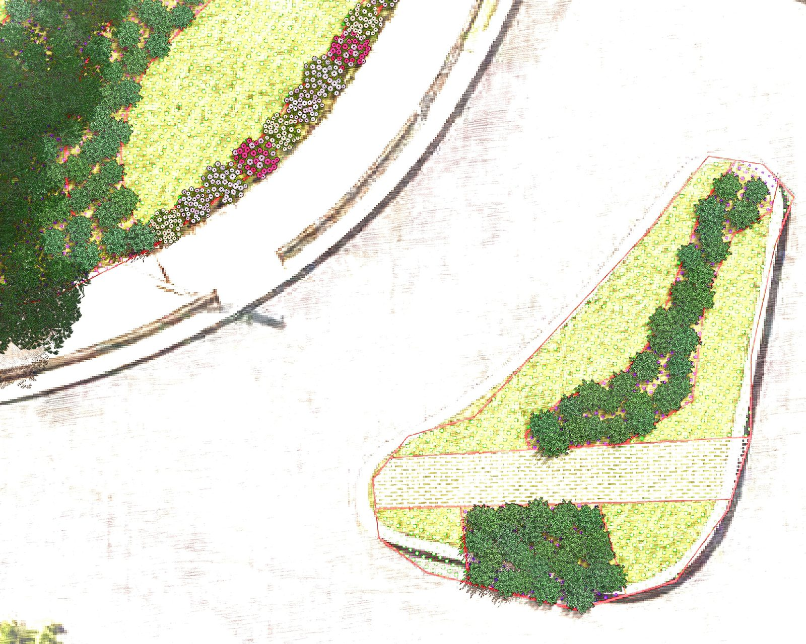
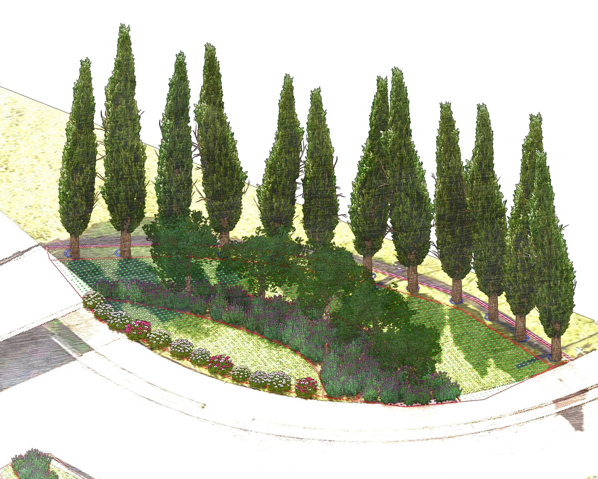
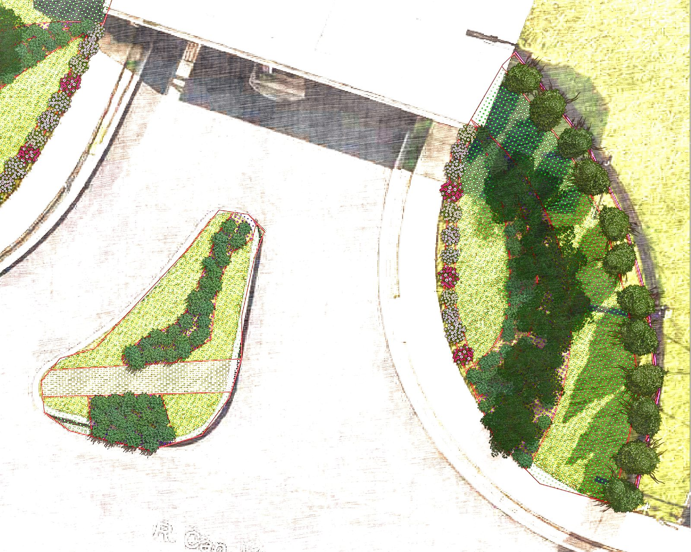

A fachada de um condomínio é o seu cartão de visitas. É o jardim que recebe quem chega e que o morador vê todos os dias ao sair — uma identidade paisagística que se imprime na memória. Esta proposta foi desenvolvida para transformar a fachada do Residencial Florença em um conjunto inesquecível.

Cada espaço verde possui um ritmo próprio. O paisagismo nasce da escuta — e da década de experiência em projetos de Londres.
A Gardenia nasce da união entre técnica, experiência e sensibilidade no cuidado com os jardins. Cada espaço verde possui um ritmo próprio — e o paisagismo vai além da estética: trata-se de compreender o ambiente, respeitar os ciclos da natureza e criar paisagens que evoluem ao longo do tempo.
Parte dessa experiência foi construída ao longo de anos de atuação em Londres, com contato direto com projetos de paisagismo sustentável e práticas inspiradas na permacultura.
Para o Residencial Florença, o objetivo é claro: criar uma identidade paisagística marcante na fachada principal — que valorize o empreendimento, acolha quem chega e eleve a percepção de todos os moradores sobre o lugar onde vivem.
Volumetrias verticais marcantes, flores de solo, arbustos aromáticos. Sofisticacao atemporal por linguagem mediterrânea.
A inspiração é mediterrânea. A execução é técnica. O resultado é inconfundível. A proposta parte de uma linguagem ornamental que remete ao sul da Europa — volumetrias verticais marcantes, flores de solo, arbustos aromáticos e o verde profundo dos ciprestes como espinha dorsal de toda a composição.
A escolha das espécies foi pensada para transmitir sofisticacao visual sem abrir mao da funcionalidade. Cada planta tem seu papel na composição — e juntas criam uma identidade paisagística que amadurece e se consolida ao longo do tempo.
O projeto contempla a reorganizacao completa da área denominada "Ilha 01". O resultado: uma fachada que não parece apenas cuidada. Parece projetada.




O condomínio analisa e aprova a proposta com clareza visual total — antes que uma só espécie seja removida.
O anteprojeto tridimensional é desenvolvido para que o condomínio possa analisar e aprovar a proposta com total clareza visual — antes de qualquer execução. As imagens apresentadas nesta proposta são parte desse processo.

A proposta contempla a distribuição estratégica de espécies ornamentais ao longo das áreas de implantação — priorizando composição visual, integração paisagística e desenvolvimento adequado de cada espécie ao longo do tempo.
Três etapas integradas, transparentes e sem surpresas para o condomínio. Do estudo preliminar à entrega técnica.
Do estudo preliminar à composição final do jardim, o processo foi desenhado para ser transparente, organizado e sem surpresas para o condomínio.
Investimento integral, sem custos ocultos. Tudo o que é necessário para entregar o conjunto pronto já está incluído.
Acompanhamento técnico periódico que preserva a identidade visual do projeto ao longo dos anos.
O plano de manutenção garante a adaptação adequada das espécies, a preservação estética do projeto e a durabilidade do investimento realizado. As visitas têm como objetivo preservar a identidade visual do projeto paisagístico ao longo do tempo.
Durante o período inicial de adaptação, a equipe acompanha de perto cada planta — garantindo suporte adequado para o desenvolvimento saudável do paisagismo implantado.
Estamos à disposição para esclarecimentos, ajustes e qualquer conversa necessária para que este projeto se torne realidade.